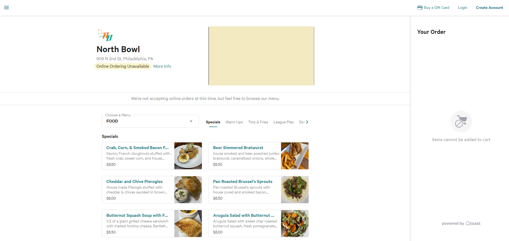
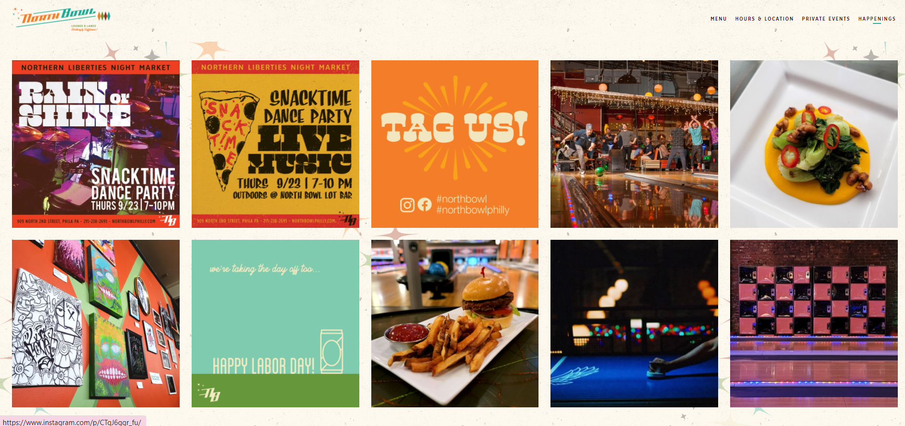
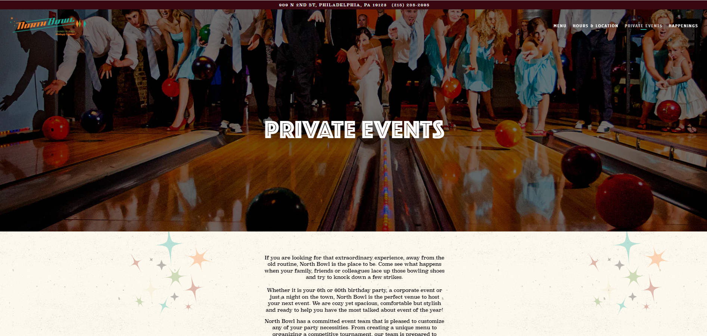
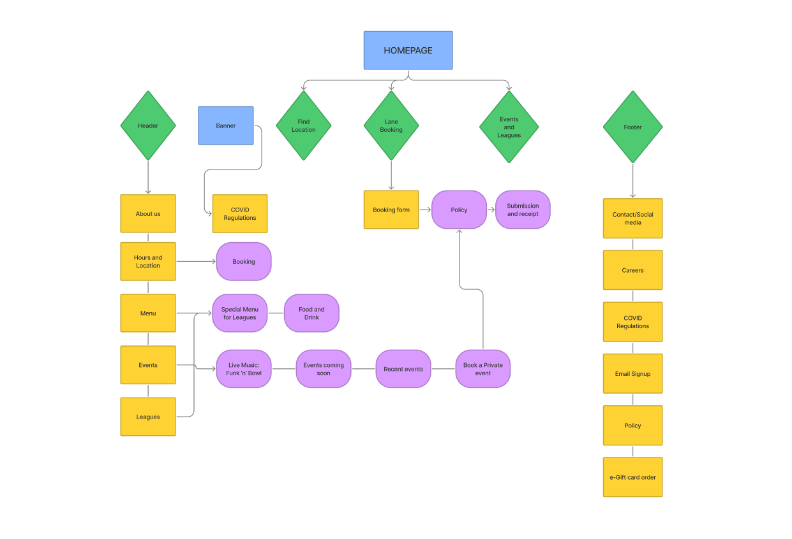
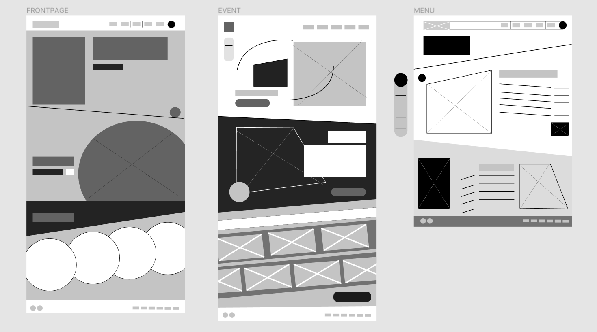
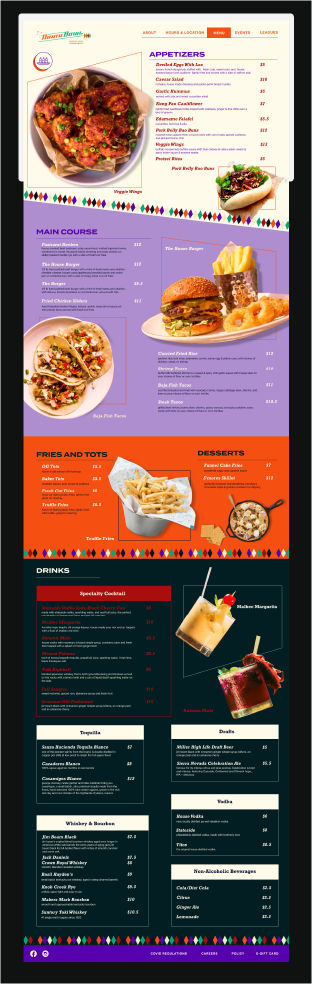
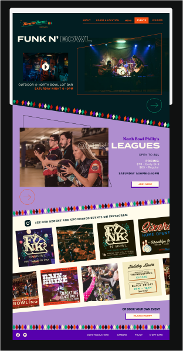

Role: Ui and UX Designer
Timeline: 10 Weeks
Tools: Figma, Adobe Creative Suite
Overview
Website redesign for North Bowl Philly - a retro-chic bowling alley that offers food, alcohol bar, bowling leagues, and private and public events, located in North East Philadelphia, PA.
The scope of this assignment is to learn how to conduct user and business research and design both aesthetically pleasing and functional user interfaces.
Challenges & Goals
This project aims to create an intuitive website for an engaging and seamless customer experience, resulting in increased sales and customers to the business. I also want to incorporate North Bowl Philly's lively atmosphere into the website's visual interface by re-establishing its color palette and adding more photos to help clients visualize available services at North Bowl Philly.
As the website appeals to a wide range of audiences, I find it challenging to exude North Bowl Philly’s energetic spirits while showcasing its neutral, easy-to-read visuals catering for older generations.
Process & Insights
I began by researching North Bowl Philly's target customers. Their target audience is young people from nearby colleges that hang out with their friends or family, professional bowler, or colleagues at their company party. People who visit the website are most likely seeking North Bowl Philly's bowling prices, operating hours, food and drinks menu, booking or private events reservations.
User Persona
I continued to research North Bowl Philly's competitors and compared their websites. Having an established branding and sufficient service information are the website's strengths. In contrast, North Bowl Philly's websites come short to its rivals in that it:
- An online booking portal, though it states that bowling lanes are first come, first served.
- An efficient navigation bar. Some tabs (About, Leagues) can't be found on its navigation bar or front page.
- Realistic photos and information of other events, which would attract customers to its website.
Original Homepage
Original Menu page
 Original Events page
Next, to decide on a more intuitive navigation to the website, I did an open card sorting exercise on three people who fit North Bowl Philly's target audience. Two of them are college students who enjoy bowling with their friends and family. The other regularly goes bowling with their colleagues as part of their company's activities. In this exercise, I ask them to sort contents into categories of their own definition, then rank the importance of these categories.
Heuristic Evaluation
Viewing the result analysis, I noticed that all three participants agreed on grouping cards of food and drinks offers together. Events, live music, open leagues information, and their sub-content are grouped into the same category. General information such as 'About us,' 'Hours and Location,' 'Social media links,' and 'Pricing' is in the same category for all three people. These are the information visitors would first look for on a site. Although they are all informational cards, they don't belong to the same type of information; therefore, I decided to put them into the navigation. Two participants told me they were having trouble sorting the 'gift card' and 'job application' cards as they didn't seem to belong to any categories. Therefore, these two cards should stand on their own, respectively.
Participants suggested including a 'Policy' page and 'Player's review' of the sites. They recalled having to follow several policies on food, drinks, and lane reservations from their previous bowling alley experience; posting these regulations on their website will warn customers of these policies ahead of time. Including a Reviews section or positive feedback from previous players to the website will make it more user-friendly, reflecting North Bowl Philly's core values. These two concepts are appealing to me, so I've included them in my new sitemap. I also added a 'Reserve a lane' feature to this website to satisfy customers' online booking needs.
From the research result and suggestions from my card sorting exercise, I came up with this new sitemap.
Original Sitemap
New Sitemap
Next, with the results from my previous research, I decided to sketch out some wireframes of the front page, the Events and Leagues page, and a content-heavy page, which is the Menu. After a critique session with my professor and classmates, I decided to go with these wireframes as it solves all previous problems and includes visual elements that can transcribe North Bowl Philly's funky, pop atmosphere.
Redesign Wireframes
In my next step, I reevaluate and establish the website's color palette. North Bowl Philly's original color palette is already reflective of the bowling alley's branding, which is retro-chic. However, as I look into some more pages on the site, the physical bowling alley seems more vibrant and upbeat. That's why I decided to bring saturation and contrast to its current colors.
Color and Typeface
Solution
My solutions were driven by reflecting North Bowl Philly's core values and bright dynamic while ensuring sufficient information delivery to the customers.
For the homepage, I focus on promoting North Bowl Philly's call to action, booking a lane, finding the nearest location, and exploring other activities offered by the bowling alley.
North Bowl Philly's Homepage
To organize the Menu page, with its dense content, I decided to use a hamburger menu that retracts in and expands out whenever the customers need it. Using this menu, I could keep the page from overloading with information and help users move to their desired piece of data quickly and easily.
North Bowl Philly's Menu
For the event page, I decided to combine information from the Live Band, Happenings, and Leagues page to this one page for a condensed overview of activities that are held at North Bowl Philly.
North Bowl Philly's Event page
Final Product
Takeaways
In 10 weeks, this project taught me valuable lessons of the process of analyzing, conducting research, doing sitemap, wireframes, and finally designing in a new software. I also realize the importance of thorough research and real customer's input in a real-world problem.